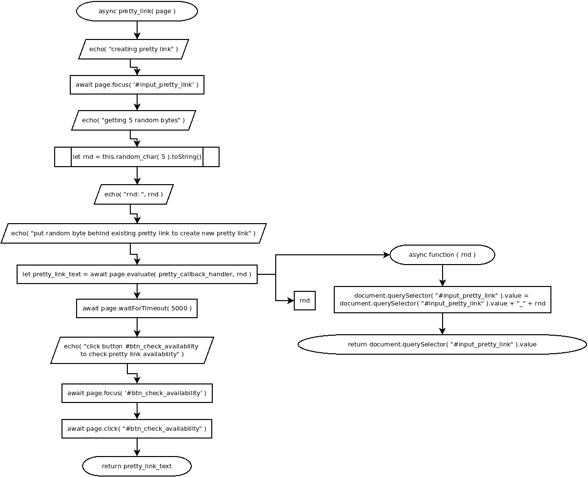

async pretty_link( page )
Flowchart

Code
async pretty_link( page ){
echo( "creating pretty link" );
// set focus on #input_pretty_link
await page.focus( '#input_pretty_link' );
echo( "getting 5 random bytes" );
let rnd = this.random_char( 5 ).toString();
echo( "rnd: ", rnd );
echo( "put random byte behind existing pretty link to create new pretty link" );
let pretty_link_text = page.evaluate( ( rnd )=>{
document.querySelector( "#input_pretty_link" ).value = document.querySelector( "#input_pretty_link" ).value + "_" + rnd;
return document.querySelector( "#input_pretty_link" ).value;
}, rnd );
await page.waitForTimeout( 5000 );
echo( "click button #btn_check_availability to check pretty link availability" );
await page.focus( '#btn_check_availability' );
await page.click( "#btn_check_availability" );
return pretty_link_text;
}
Refers to:
random_char( length )